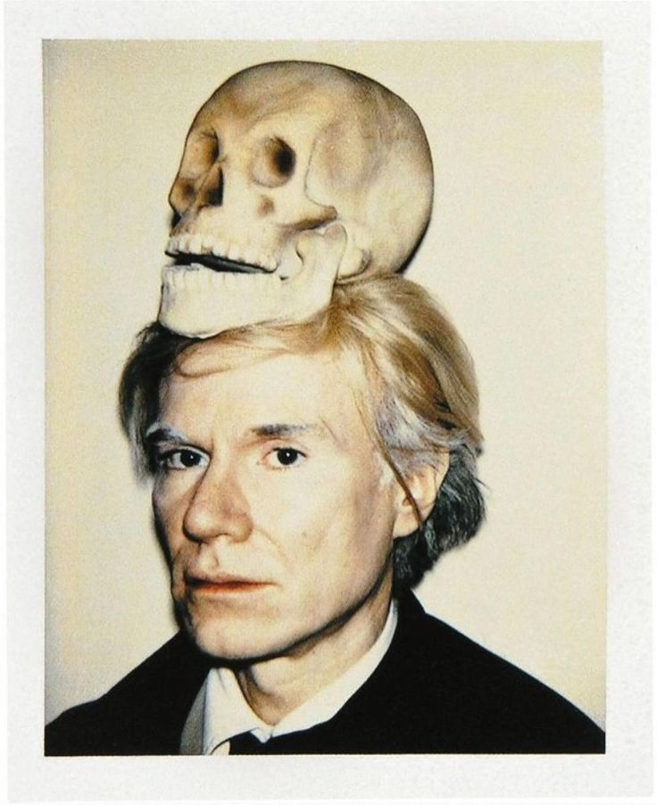

Apresentação
Andy Warhol (nascido Andrew Warhola Jr.; Pittsburgh, 6 de agosto de 1928 – Nova York, 22 de fevereiro de 1987) foi um artista visual, diretor de cinema, produtor e figura de destaque do movimento Pop Art. Suas obras exploram a relação entre expressão artística, publicidade e cultura de celebridades que floresceu na década de 1960 e abrangem uma variedade de mídias, incluindo pintura, serigrafia, fotografia, filme e escultura. Algumas de suas obras mais conhecidas incluem as serigrafias Campbell's Soup Cans (1962) e Marilyn Diptych (1962), os filmes experimentais Empire (1964) e Chelsea Girls (1966) e os eventos multimídia conhecidos como Exploding Plastic Inevitable (1966–67).
